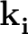
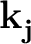

Next: A. Appendix: Electron-phonon coefficients
Up: User's Guide for the PHonon
Previous: 5 Parallelism
Contents
The data file produced by pw.x is bad or incomplete or produced
by an incompatible version of the code.
You have a bad restart file from a preceding failed execution.
Remove all files recover* in outdir.
You have a
metallic or spin-polarized system but occupations are not set to
`smearing'.
This may not be an error: the Acoustic Sum Rule (ASR) is never exactly
verified, because the system is never exactly translationally
invariant as it should be. The calculated frequency of the acoustic
mode is typically less than 10 cm-1, but in some cases it may be
much higher, up to 100 cm-1. The ultimate test is to diagonalize
the dynamical matrix with program dynmat.x, imposing the ASR. If you
obtain an acoustic mode with a much smaller ω (let us say
< 1cm-1 )
with all other modes virtually unchanged, you can trust your results.
``The problem is [...] in the fact that the XC
energy is computed in real space on a discrete grid and hence the
total energy is invariant (...) only for translation in the FFT
grid. Increasing the charge density cutoff increases the grid density
thus making the integral more exact thus reducing the problem,
unfortunately rather slowly...This problem is usually more severe for
GGA than with LDA because the GGA functionals have functional forms
that vary more strongly with the position; particularly so for
isolated molecules or system with significant portions of ``vacuum''
because in the exponential tail of the charge density a) the finite
cutoff (hence there is an effect due to cutoff) induces oscillations
in rho and b) the reduced gradient is diverging.''(info by Stefano de
Gironcoli, June 2008)
Possible reasons:
- if this happens only for acoustic modes at = 0 that should
have ω = 0: Acoustic Sum Rule violation, see the item before
this one.
- wrong data file read.
- wrong atomic masses given in input will yield wrong frequencies
(but the content of file fildyn should be valid, since the force
constants, not the dynamical matrix, are written to file).
- convergence threshold for either SCF (conv_thr) or phonon
calculation (tr2_ph) too large: try to reduce them.
- maybe your system does have negative or strange phonon
frequencies, with the approximations you used. A negative frequency
signals a mechanical instability of the chosen structure. Check that
the structure is reasonable, and check the following parameters:
- The cutoff for wavefunctions, ecutwfc
- For USPP and PAW: the cutoff for the charge density, ecutrho
- The k-point grid, especially for metallic systems.
- For metallic systems: it has been observed that the convergence with
respect to the k-point grid and smearing is very slow in presence of
semicore states, and for phonon wave-vectors that are not commensurate i
with the k-point grid (that is,
≠ - )
Note that ``negative'' frequencies are actually imaginary: the negative
sign flags eigenvalues of the dynamical matrix for which
ω2 < 0.
Verify the q-vector for which you are calculating phonons. In order to
check whether a symmetry operation belongs to the small group of ,
the code compares and the rotated , with an acceptance tolerance of
10-5 (set in routine PW/src/eqvect.f90). You may run into trouble if
your q-vector differs from a high-symmetry point by an amount in that
order of magnitude.
Symmetry-related errors like symmetry operation is non orthogonal,
or Wrong representation, or Wrong degeneracy, are almost
invariably a consequence of atomic positions that are close to,
but not sufficiently close to, symmetry positions. If such errors occur,
set the Bravais lattice using the correct ibrav value (i.e. do
not use ibrav=0), use Wyckoff positions if known. This must be
done in the self-consistent calculation.
Subsections
Next: A. Appendix: Electron-phonon coefficients
Up: User's Guide for the PHonon
Previous: 5 Parallelism
Contents